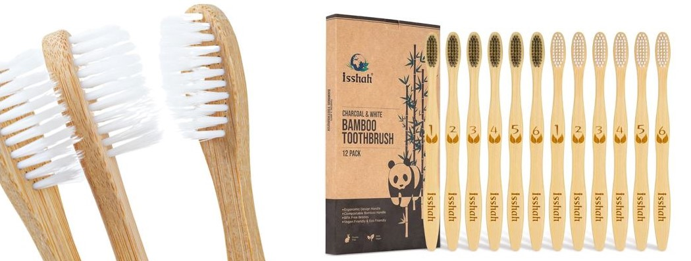
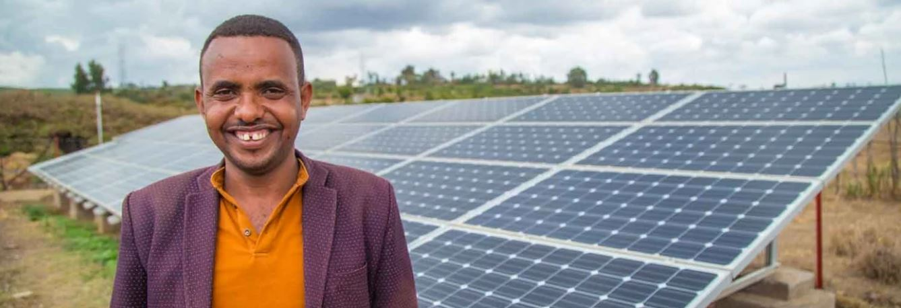

Blog Post 1: The Eco-Friendly Choice: Switching to Sustainable Toothbrushes
Posted on December 30, 2023 by Teklit Berhe

Switching to eco-friendly toothbrushes is a simple yet impactful step towards reducing plastic waste and promoting sustainability in our daily lives, especially in Ethiopia where environmental consciousness is growing.
Benefits of Eco-Friendly Toothbrushes in Ethiopia:
- Reduction of Plastic Waste: Eco-friendly toothbrushes made from biodegradable materials such as bamboo or cornstarch reduce the reliance on plastic and minimize environmental impact in Ethiopia.
- Support for Sustainable Practices: Choosing eco-friendly toothbrushes in Ethiopia supports sustainable manufacturing practices and encourages the adoption of environmentally friendly products.
- Healthier for You and the Planet: Eco-friendly toothbrushes are free from harmful chemicals and plastics, offering a safer and more sustainable option for oral care in Ethiopia.
- Contribution to a Circular Economy: Eco-friendly toothbrushes can be composted or recycled in Ethiopia, contributing to a circular economy and reducing waste accumulation.
By making the switch to eco-friendly toothbrushes in Ethiopia, we can take a positive step towards a greener and more sustainable future for all.
Read More
Blog Post 2: Harnessing Solar Energy: A Brighter Future for Ethiopia
Posted on December 30, 2023 by Hayelegebreal Seyoum

Harnessing solar energy is a transformative solution for Ethiopia's energy needs, offering a sustainable and renewable alternative to traditional fossil fuels. As Ethiopia strives for economic growth and development, solar energy presents an opportunity to power communities, industries, and households in an environmentally responsible manner.
Advantages of Solar Energy in Ethiopia:
- Clean and Renewable: Solar energy is a clean and renewable resource that can be harnessed throughout Ethiopia to generate electricity without harmful emissions or pollution.
- Energy Independence: Investing in solar energy in Ethiopia reduces dependency on imported fossil fuels, promoting energy independence and security for the country.
- Job Creation and Economic Growth: The development of solar energy projects in Ethiopia creates jobs, stimulates economic growth, and fosters innovation in the renewable energy sector.
- Environmental Benefits: Solar energy reduces greenhouse gas emissions, mitigates climate change impacts, and contributes to the preservation of Ethiopia's natural environment and biodiversity.
By embracing solar energy, Ethiopia can unlock its abundant renewable resources, create sustainable energy solutions, and pave the way for a brighter and more prosperous future for all its citizens.
Read More